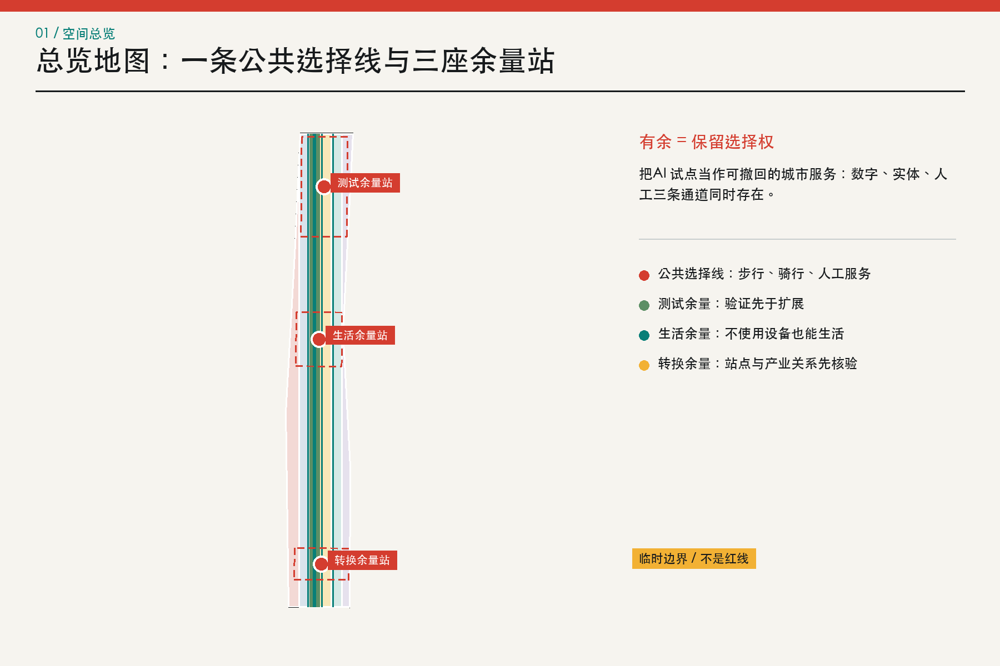
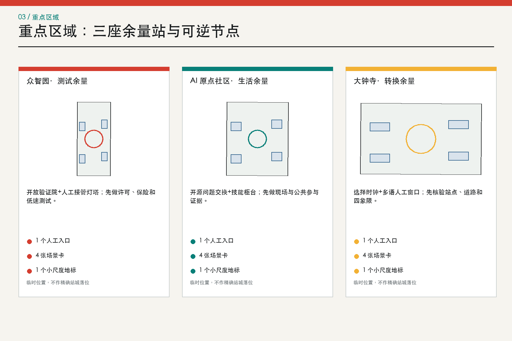
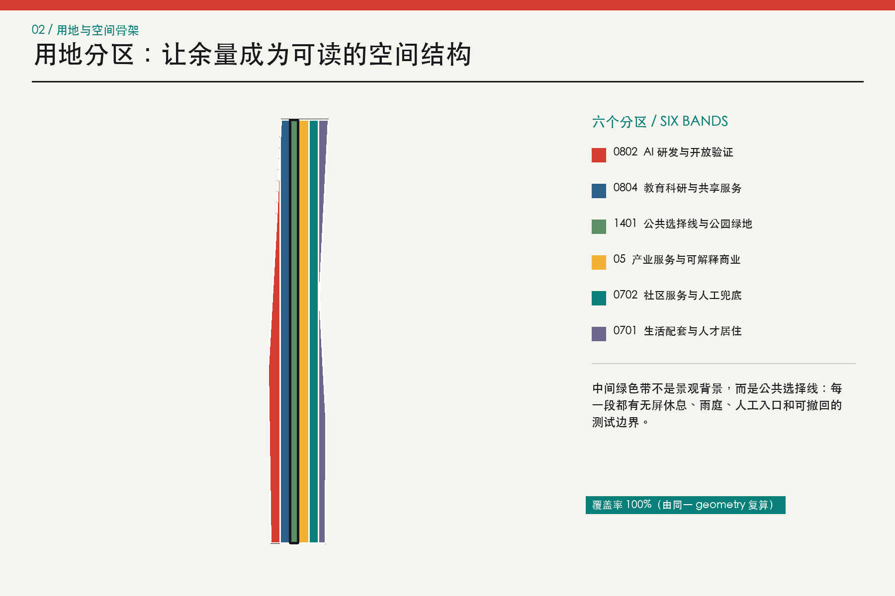
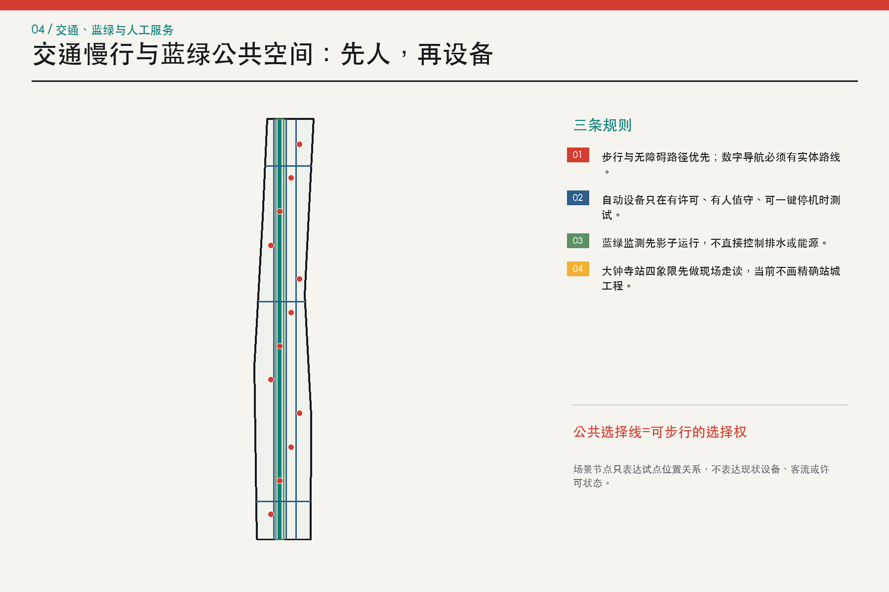
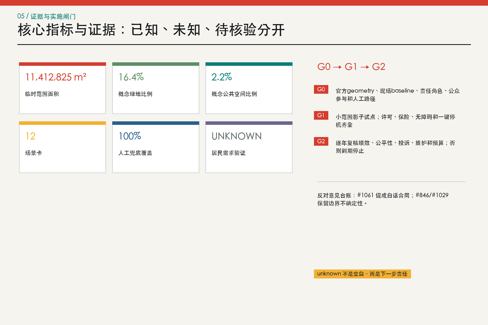

SCN-01
低速配送共路测试
众智园责任: 经许可的试点运营者、现场安全员；责任主体待组织方确认
对象: 步行者、骑行者、配送人员和行动不便者
baseline: 试点前连续 2 周人工配送冲突、时长和投诉记录
窗口: 4 周、仅白天、单一路段
成功: 零碰撞；100% 接管测试在 10 秒内完成；路线合规率不低于 95%
停止: 任何人身伤害、碰撞、越界，或同类有效投诉累计 3 次即停
人工替代: 恢复人工手推配送并保留原步行空间
JINGZHANG HEADROOM / 京张有余
一条保留选择权的 AI 城市线。开放概念研究输入：未现场、未访谈；临时边界只用于讨论和复算。数字、实体、人工三条服务路径必须并存。

统筹研究约 43.6 km²；总体设计约 11.4 km²；三处重点区公告合计约 368.4 ha。当前图层采用组织方 provisional polygon，不能替代 official redline。
众智园承担测试余量，AI 原点社区承担生活余量，大钟寺承担转换余量。大钟寺 polygon 不自行平移；站点与四象限步行先列为 G0 核验任务。

六个用途代码共享边界，完整覆盖提交范围。颜色是设计角色，不是法定性质；官方 boundary 或控规更新后必须整体重算。

人、无障碍、骑行、人工接驳优先。自动设备只在许可、保险、现场值守和实体停机齐全时测试；蓝绿和算电热场景先影子运行。

蓝绿系统把雨庭、遮阴、慢行和无屏休息串成日常基础设施；环境数据只做聚合观察，人工巡查保留最终判断。
12 个建筑 footprint 只是概念承载单元。现状、权属、拆改、FAR、高度、道路红线和成本均待现场与专业资料确认。
九个项目族从证据桌开始，经 G0 证据与责任、G1 可撤回试点、G2 条件扩展三道门。任何门缺资料就回到人工服务。
证据与责任：官方 geometry、baseline、参与方案、责任角色、许可和人工路径。
可撤回试点后再谈条件扩展；年度审查不通过就到期停止。
12 张卡全部包含责任、对象、资源/许可、baseline、窗口、成功、停止和人工替代；SCN-01 至 SCN-04 是测试验证。
责任: 经许可的试点运营者、现场安全员；责任主体待组织方确认
对象: 步行者、骑行者、配送人员和行动不便者
baseline: 试点前连续 2 周人工配送冲突、时长和投诉记录
窗口: 4 周、仅白天、单一路段
成功: 零碰撞；100% 接管测试在 10 秒内完成；路线合规率不低于 95%
停止: 任何人身伤害、碰撞、越界，或同类有效投诉累计 3 次即停
人工替代: 恢复人工手推配送并保留原步行空间
责任: 公共空间运营角色、无障碍审校人和现场服务员
对象: 轮椅使用者、视障者、老人和携童家庭
baseline: 试点前完成全路线人工走读与障碍点台账
窗口: 4 周，工作日与周末各覆盖 2 次高峰
成功: 抽检路径正确率不低于 90%；每个数字提示均有等效实体提示
停止: 出现误导致受困、无人工入口，或系统尝试保存个人轨迹即停
人工替代: 固定导视、纸本路线图和人工陪同
责任: 设施维护单位的授权操作员和独立复核人
对象: 维修人员、居民和公共空间使用者
baseline: 试点前 8 周人工工单的发现、误报和闭环时间
窗口: 8 周，限定 1 类非生命安全设施
成功: 100% 建议经人复核；误报率低于 baseline；工单均可追溯
停止: 漏报生命安全风险、越权访问或未经授权上传图像即停
人工替代: 回到现有人工巡检和电话报修流程
责任: 公共服务窗口负责人和当班人工坐席
对象: 访客、外籍人才、居民和一线服务人员
baseline: 试点前 6 周人工咨询类型、等待时间和转介结果
窗口: 6 周，仅答复低风险公开信息
成功: 高风险问题 100% 转人工；抽检事实错误率低于 2%；投诉均在 2 个工作日首响
停止: 输出医疗、法律或资格决定，泄露个人信息，或连续 2 次严重事实错误即停
人工替代: 保留原人工窗口、纸本指南和电话服务
责任: 获授权的就业服务角色和人工顾问
对象: 受自动化影响的劳动者与小商户
baseline: 4 周匿名需求问卷与人工咨询分类，须由有权主体组织
窗口: 8 周服务试点
成功: 100% 推荐可解释且可拒绝；至少 90% 个案在 5 个工作日内获得人工回访
停止: 出现歧视性分流、未经同意共享，或人工顾问缺席即停自动推荐
人工替代: 只保留人工咨询与公开课程目录
责任: 开源维护者委员会和问题提交方
对象: 开发者、研究者、初创团队与公共服务人员
baseline: 首轮只登记 20 个经清权问题，不设产出数量承诺
窗口: 每轮 12 周
成功: 100% 问题有所有者、许可和关闭理由；至少 80% 反馈在 10 个工作日内回应
停止: 发现未授权数据、个人信息或无法确认的权利人即下架
人工替代: 保留线下问题工作坊和纸面登记
责任: 水务专业复核角色、现场巡查员和公共空间运营者
对象: 周边居民、园区员工和维护人员
baseline: 至少覆盖 1 个完整汛期的人工积水点记录后再判断
窗口: 一个汛期的影子运行，不直接控制设施
成功: 预警均可解释且由人签发；漏报率不高于人工 baseline
停止: 误导疏散、绕过人工签发，或输入来源不明即停
人工替代: 人工巡查、广播和实体封控
责任: 公共空间运营者和夜间服务员
对象: 夜班员工、居民和照护者
baseline: 试点前 2 周分时段人工观察，不记录身份
窗口: 8 周，22:00 前结束活动
成功: 100% 区域不采集身份；噪声不高于 baseline；求助电话每班测试
停止: 居民有效噪声投诉连续 2 周上升或夜间值守缺岗即停活动
人工替代: 保留普通座椅、照明和人工巡查
责任: 能源专业人员、设施运维者和独立审计角色
对象: 园区运维者、企业和周边用能群体
baseline: 先取得不少于 12 个月聚合负荷；当前 baseline 缺失
窗口: 12 周影子运行，不下发控制指令
成功: 100% 建议可复算；预测误差经人工确认优于既有方法后才可继续
停止: 缺负荷、热网或安全资料，或模型试图直接控制设备即停
人工替代: 维持原能源管理制度
责任: 数据责任角色、法律审校人和人工受理员
对象: 居民、企业、开发者和公共服务人员
baseline: 先梳理现有公开数据说明是否能被非专业读者理解
窗口: 6 周白话说明测试
成功: 抽样理解正确率不低于 80%；100% 授权可撤回并有人工确认
停止: 出现默认同意、捆绑授权、撤回失效或个人信息外泄即停
人工替代: 纸本说明、人工答疑和不授权选项
责任: 文化审校角色、档案权利人和公共空间运营者
对象: 居民、学生、访客和历史研究者
baseline: 在地资源与叙事由现场调查、档案核验和公众参与后建立
窗口: 首轮展陈 12 周后复盘
成功: 100% 叙事标明来源与不确定性；收到异议 10 个工作日内公开回应
停止: 权利争议、错误归属或受影响群体要求暂停即撤展复核
人工替代: 只保留经核验的实体文字与人工讲解
责任: 活动主办角色、现场总指挥和独立安全员
对象: 活动参与者、通勤者、居民和商户
baseline: 先记录 3 次同规模活动的人工客流与冲突；当前不存在
窗口: 单场活动影子运行后逐场审批
成功: 人工总指挥保留最终权；所有出口保持可用；零人员受伤
停止: 密度数据不可解释、出口受阻、人工通信中断或发生伤害即停活动
人工替代: 人工分流、实体围栏、广播和限流
数字统一由 EPSG:4548 空间复算；known、unknown 和 provisional 不能混写。

compliance_matrix 覆盖公告 1.3/1.4/1.5 与 agent.1-agent.6；standard_matrix 覆盖登记标准；design_depth_matrix 覆盖 15 项专业深度。
结构化自检通过：零现场、零访谈、provisional geometry、拓扑复算、12 张卡完整合同、人工兜底、双语图件和版权台账均公开。
正式依据：公告、任务书、site package 和来源登记。公开反馈：Issue #1061、#846、#1029 与 advisory PR #1071。全球案例只作机制背景。
OFFICIAL-ANNOUNCEMENTAGENT-TASKBOOKCOMMUNITY-ISSUE-1061BOUNDARY-CHECK-846KEY-AREA-CHECK-1029ADVISORY-PR-1071CASE-MILACASE-DIGITAL-CATAPULT最重要的假设是：官方边界、站点/道路锚定、现场事实、居民需求、控规、许可、预算和运营主体都尚未确认。unknown 是下一步责任，不是可填空白。
完整假设、影响和下一步责任见 assumptions.json；版权和清权见 report/copyright_statement.md。